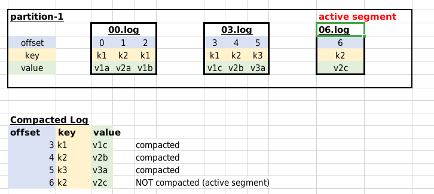

Use Kafka Command line utils
10 mins
$ ~/apps/kafka/bin/kafka-topics.sh --bootstrap-server localhost:9092 \
--create --topic compact1 \
--replication-factor 1 --partitions 2 \
--config "cleanup.policy=compact" \
--config "delete.retention.ms=1000" \
--config "segment.ms=1000" \
--config "max.compaction.lag.ms=1000"Configuration explained:
For more detailed explanation see Kafka documentation
You will see output as follows
Topic: compact1 PartitionCount: 2 ReplicationFactor: 1 Configs: cleanup.policy=compact,segment.bytes=1073741824,max.compaction.lag.ms=1000,delete.retention.ms=100,segment.ms=100
Topic: compact1 Partition: 0 Leader: 0 Replicas: 0 Isr: 0
Topic: compact1 Partition: 1 Leader: 0 Replicas: 0 Isr: 0Start console producer and send some data
Using Kafkacat
or using console-producer
$ ~/apps/kafka/bin/kafka-console-producer.sh --bootstrap-server localhost:9092 \
--property parse.key=true --property key.separator=: \
--topic compact1Type some sample data in this format. We are using : as key-value seperator.
k1:v1a
k2:v2a
k1:v1b
k1:v1c
k2:v2b
k3:v3a
k2:v2cNote: To end the input data stream you can type Ctrl + d on this terminal.
Open another terminal.
Run a consumer using kafkacat
or using console consumer and read from beginning.
You might see output like this:
k1:v1c
k2:v2b
k3:v3a
k2:v2cIf you don’t see the compacted results, paste the data again in the producer and restart the consumer.
As we can see, not all keys are compacted? Why is that?
Kafka broker divides the partition log into segments. Segments are files stored in the file system (inside data directory and in the directory of the partition), which their name ends with .log
The last segment in the partition is called the active segment. Only the active segment of a log can receive the newly produced messages.
Kafka will not compact keys in active segment

You can see partition logs like this
/tmp/kafka-logs/compact1-0
├── 00000000000000000000.index
├── 00000000000000000000.log
├── 00000000000000000000.timeindex
└── leader-epoch-checkpoint
/tmp/kafka-logs/compact1-1
├── 00000000000000000000.index
├── 00000000000000000000.log
├── 00000000000000000000.timeindex
├── 00000000000000000006.snapshot
├── 00000000000000000007.index
├── 00000000000000000007.log
├── 00000000000000000007.snapshot
├── 00000000000000000007.timeindex
└── leader-epoch-checkpoint-rw-r--r-- 1 ubuntu ubuntu 8 Jan 18 22:55 leader-epoch-checkpoint
-rw-r--r-- 1 ubuntu ubuntu 10 Jan 18 23:07 00000000000000000006.snapshot
-rw-r--r-- 1 ubuntu ubuntu 10 Jan 18 23:07 00000000000000000007.snapshot
-rw-r--r-- 1 ubuntu ubuntu 10 Jan 18 23:59 00000000000000000008.snapshot
-rw-r--r-- 1 ubuntu ubuntu 10 Jan 19 00:07 00000000000000000009.snapshot
-rw-r--r-- 1 ubuntu ubuntu 10 Jan 19 00:07 00000000000000000010.snapshot
-rw-r--r-- 1 ubuntu ubuntu 12 Jan 19 00:18 00000000000000000000.timeindex
-rw-r--r-- 1 ubuntu ubuntu 147 Jan 19 00:18 00000000000000000000.log
-rw-r--r-- 1 ubuntu ubuntu 0 Jan 19 00:18 00000000000000000000.index
-rw-r--r-- 1 ubuntu ubuntu 10 Jan 19 00:18 00000000000000000011.snapshot
-rw-r--r-- 1 ubuntu ubuntu 10485756 Jan 19 00:18 00000000000000000012.timeindex
-rw-r--r-- 1 ubuntu ubuntu 10 Jan 19 00:18 00000000000000000012.snapshot
-rw-r--r-- 1 ubuntu ubuntu 74 Jan 19 00:18 00000000000000000012.log
-rw-r--r-- 1 ubuntu ubuntu 10485760 Jan 19 00:18 00000000000000000012.index